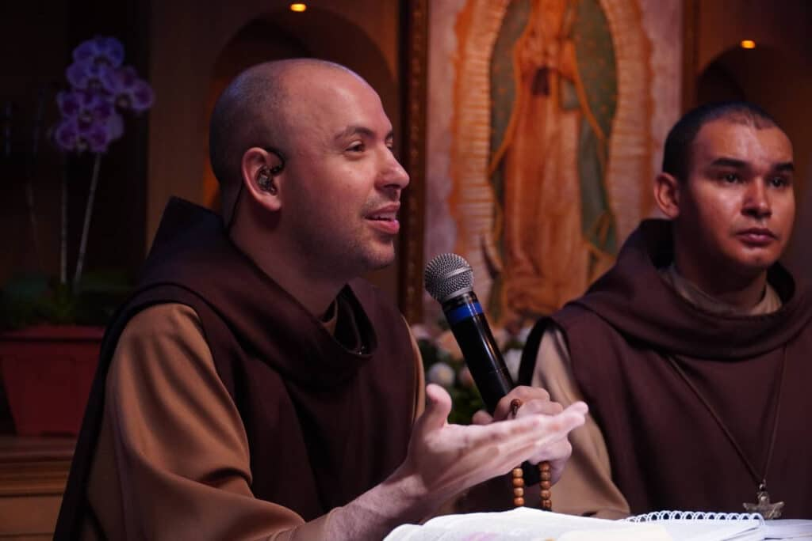
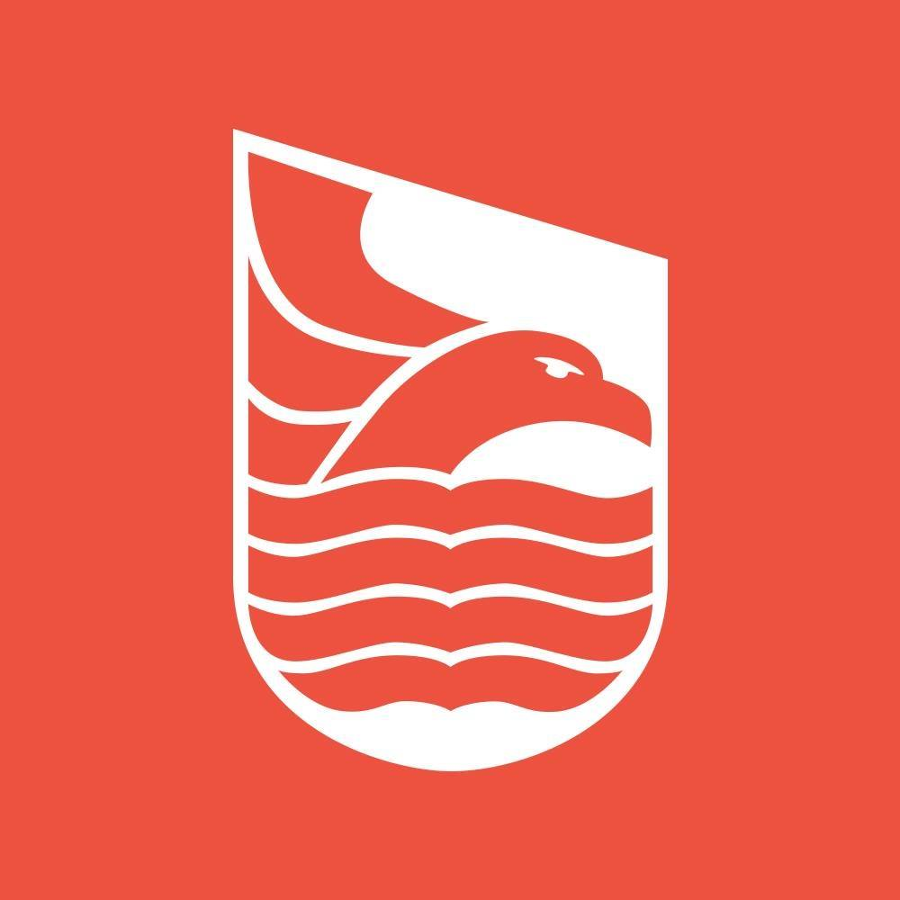

Você trabalha 10 horas por dia. Sabe que alguma coisa está errada. Tentou trocar de estratégia, de ferramenta, de mentor. E continua no mesmo lugar.
O problema nunca foi falta de esforço. Foi falta de diagnóstico.
Em 4 semanas, você vai saber com números, não com opinião se o seu negócio é viável do jeito que está. E se não é, vai saber exatamente o que mudar.
Você definiu sua meta de faturamento. Dividiu pelo preço que cobra. Chegou no número de clientes que precisa.
E parou por aí.
Todo mundo para aí.
Ninguém faz a conta seguinte: quantas horas cada cliente consome? Quantas horas você realmente tem? Quando faz essa conta, a conta que ninguém faz, descobre que a meta é matematicamente impossível.
Não é falta de disciplina.
Não é falta de estratégia.
Não é falta de marketing.
É que a conta não fecha. E nunca fechou. Você só nunca fez ela.
Se chama taxa de ocupação. É a relação entre o tempo que você precisa pra bater sua meta e o tempo que você realmente tem.
Se essa taxa passa de 100%, sua meta é uma ilusão. Não importa quantos cursos você compre, quantos gurus você siga, quantas manhãs produtivas você tenha.
É matemática. Não tem hack.
A maioria dos empresários que me procura opera entre 95% e 130%. Ou seja: no limite absoluto ou no impossível. E se culpam por não conseguir.
A Bússola mostra esse número. E mostra o que fazer com ele.
Um programa de 4 semanas onde eu vou te ajudar a fazer três coisas que você provavelmente nunca fez:
1. Mapear quanto tempo o seu negócio realmente consome.
Não o que você acha. O que é. Com cada tarefa, cada periodicidade, cada hora contada. Sem arredondar, sem romantizar.
2. Descobrir se o seu preço está certo.
Quanto custa pra você entregar? Quanto o mercado cobra? Quanto o seu cliente percebe de valor? Três números, três pilares. A maioria só conhece um. Ou nenhum.
3. Montar um plano de ação baseado em realidade, não em desejo.
Se o diagnóstico mostra que precisa mudar preço, você vai saber como. Se mostra que precisa cortar escopo, vai saber o quê. Se mostra que precisa contratar, vai saber pra qual função.
Sem fórmula mágica. Sem "acredite no seu potencial". Com uma planilha, uma calculadora e a verdade.
Mapeia a realidade do negócio como ele é hoje. Sem filtro.
Aplica a Matriz de Horários. Descobre sua taxa de ocupação real.
Calcula os três pilares: piso, referência e teto.
Cruza tudo e monta o plano de ação concreto.
A Bússola foi pensada pra quem já tem um negócio rodando. Agência, consultoria, mentoria, prestação de serviço. Fatura entre R$ 20k e R$ 150k por mês e sente que algo não encaixa.
Trabalha demais. A conta é apertada. Já tentou de tudo. E começa a desconfiar que o problema não é o que faz, mas como o negócio está montado.
Se você está começando agora e precisa do básico, isso não é pra você.
Se você quer uma resposta rápida e fácil, isso não é pra você.
Se você não está disposto a olhar pros números reais, isso não é pra você.
Agora, se você quer saber a verdade sobre o seu próprio negócio, mesmo que doa: bem-vindo.
“Cada vez mais curioso!”
Você vai receber acesso a 10 casos detalhados de empresários com diagnósticos diferentes. Donos de agência que descobriram que a meta era impossível. Mentoras que entenderam que o modelo tinha teto. Prestadores que perceberam que estavam trabalhando de graça nas iterações infinitas. Veteranos que nunca reajustaram em 8 anos.
Cada caso tem os números, o diagnóstico e a revelação.
Você vai ler e se reconhecer em pelo menos dois ou três. E isso vai acontecer antes de você fazer o próprio.
Três templates prontos pra usar no dia seguinte:
Conversa de reajuste de preço. A Matriz mostra que você cobra menos do que deveria. Esse template te ajuda a falar com o cliente sem perder ele.
Redefinição de escopo. Você descobre que entrega o dobro do combinado. O template reorganiza o que está incluído e o que é adicional.
Decisão calculada de contratação. Os números mostram que precisa de mais capacidade, mas você tem trauma de contratar. O template mostra se precisa, pra quê, e se a conta fecha.
30 dias de acesso à base completa do Íntegros
Todo o conteúdo, frameworks e ferramentas do programa de acompanhamento de R$ 30.000/ano, aberto pra você por 30 dias. Pra ir além do diagnóstico e começar a implementar antes mesmo de decidir o próximo passo.
Gravação dos 4 encontros
Pra revisitar quando precisar. Às vezes o diagnóstico faz mais sentido na segunda vez.
A maioria dos empresários que passa pela Bússola descobre que está perdendo milhares por mês operando o modelo errado. Alguns descobrem que estão cobrando metade do que deveriam. Outros descobrem que um único cliente consome mais tempo do que todos os outros juntos.
R$ 497 é o preço de saber.
Se ao final das 4 semanas, tendo feito os exercícios, você não tiver clareza sobre a viabilidade do seu modelo e um plano concreto de ação, eu devolvo 100%.
Eu não tenho problema em devolver. Tenho problema em entregar um programa que não funciona.
Esses são depoimentos reais de empresários que passaram pela Íntegros. Os nomes, os números e as histórias são deles.
"Passei dos 30k pela primeira vez. Tudo isso graças aos direcionamentos de escalada de preço, além de plugar os downsells de mentoria somente em grupo e consultoria rápida."
"Os resultados da primeira call com o Kevin foram maiores em faturamento que todos os outros meses em que trabalhei sozinha, e finalmente com um negócio estruturado."
"Hoje eu fechei a minha primeira venda no valor de R$ 18.000 para 6 meses de serviço. Antes de entrar na Íntegros eu cobrava uns R$ 1.000 por mês."
"Ajustei os valores de 2 contratos totalizando um aumento de 2,7k e fiz uma venda de 3k. Total de R$ 5.700. Estou a 1 mês e 12 dias na mentoria. Há um ano eu cortava cabelo."
"Fechamos contrato de 90k pela edição de um documentário."
"Saí de R$ 12.000 – R$ 19.000. Para R$ 29.000 no primeiro mês de mentoria. Estou no segundo mês e mantendo o faturamento."
"Passei dos 30k pela primeira vez. Tudo isso graças aos direcionamentos de escalada de preço, além de plugar os downsells de mentoria somente em grupo e consultoria rápida."
"Os resultados da primeira call com o Kevin foram maiores em faturamento que todos os outros meses em que trabalhei sozinha, e finalmente com um negócio estruturado."
"Hoje eu fechei a minha primeira venda no valor de R$ 18.000 para 6 meses de serviço. Antes de entrar na Íntegros eu cobrava uns R$ 1.000 por mês."
"Ajustei os valores de 2 contratos totalizando um aumento de 2,7k e fiz uma venda de 3k. Total de R$ 5.700. Estou a 1 mês e 12 dias na mentoria. Há um ano eu cortava cabelo."
"Fechamos contrato de 90k pela edição de um documentário."
"Saí de R$ 12.000 – R$ 19.000. Para R$ 29.000 no primeiro mês de mentoria. Estou no segundo mês e mantendo o faturamento."


Não é sobre urgência. É sobre matemática.
Se a sua taxa de ocupação está acima de 100%, você está se matando por uma meta que nunca ia funcionar do jeito que está. E vai continuar se matando até olhar pros números.
A Bússola é o momento de parar e fazer a conta.
A Bússola foi pensada pra quem presta serviço: agência, consultoria, mentoria, assessoria, produtora, estúdio. Negócios onde o tempo do dono é o recurso mais escasso e mais mal calculado.
Se você vende produto físico ou tem e-commerce, a lógica é diferente. Não é que não funcione, é que o diagnóstico foi construído pra quem vende hora, mesmo que não saiba que vende hora.
Melhor ainda. A maioria dos empresários que eu atendo me procura depois de anos operando um modelo que nunca fez sentido. Eles construíram primeiro e fizeram a conta depois. E a conta não fechou.
Se você ainda está na fase de ideia, a Bússola te dá a chance de fazer o diagnóstico antes de construir. Você vai entender quanto tempo o modelo que você imagina realmente consome, quanto precisa cobrar pra ele ser viável, e se a conta fecha antes de investir meses (ou anos) descobrindo na dor.
Dito isso: você precisa ter pelo menos uma ideia concreta do que quer oferecer e pra quem. Se ainda tá naquele "quero empreender mas não sei com o quê", a Bússola não resolve isso.
O encontro ao vivo não tem horário pra acabar — vai até a dúvida acabar. Na prática, costuma durar entre 1 e 2 horas. Fora isso, mais uma ou duas horas preenchendo as ferramentas da semana no seu tempo.
Se você não tem 3 horas por semana pra diagnosticar o que está te consumindo 60, o diagnóstico é mais urgente do que você imagina.
Saber que tá errado e saber pra onde corrigir são coisas completamente diferentes. Você trata dor de cabeça e tumor cerebral do mesmo jeito?
O preço pode estar errado por custo, por mercado ou por valor percebido. Cada um desses exige uma correção diferente. A Bússola mostra qual é o seu caso e quanto deveria ser.
São. Turmas de no máximo 20 pessoas. E isso é de propósito.
Quando você vê o diagnóstico de outro empresário, percebe padrões que sozinho não perceberia. O cara que cobra metade do que deveria vai ver que não é o único. A dona de agência que trabalha 14 horas vai ouvir alguém com o mesmo problema. Isso acelera o diagnóstico mais do que qualquer encontro individual faria.
E eu comento cada caso ao vivo. Ninguém fica sem atenção.
Todos os encontros são gravados. Você assiste depois e tira dúvidas no grupo de WhatsApp.
Mas vou ser direto: a graça é estar ao vivo. O diagnóstico ao vivo, comigo olhando seus números e falando na hora o que vejo, é a parte mais valiosa. Tenta não perder.
Simples. Se ao final das 4 semanas, tendo feito os exercícios, você não tiver clareza sobre o que precisa mudar no seu negócio, eu devolvo 100%. Sem burocracia, sem interrogatório.
Eu chamo de garantia integral porque é isso que ela é. Integral. Sem letra pequena.
A Bússola é o exame. A Fundamentos é o tratamento.
Aqui você descobre o que está errado, onde o modelo quebra, quanto deveria cobrar e o que precisa mudar. Na Fundamentos, você implementa a mudança com 16 semanas de acompanhamento.
Dá pra ir direto pra Fundamentos? Dá. Mas as primeiras semanas vão ser... o diagnóstico. Você pode fazer ele antes, por menos, e chegar lá já sabendo o que atacar.